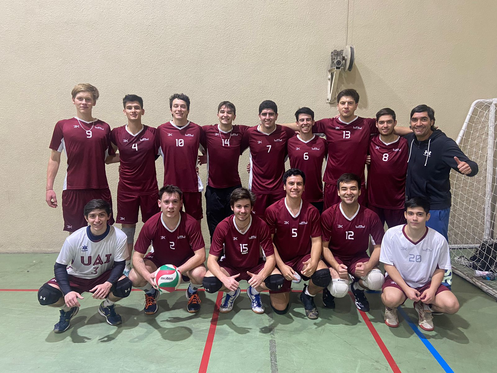

Pasatiempo 1: Deporte
Me gusta mucho hacer deporte, lo considero importante para la vida cotidiana. He probado varios deportes como fútbol, baloncesto y tenis. Pero el que más me atrajo fue el voleibol. Actualmente formo parte del equipo de voleibol de mi universidad, y ha sido una gran decisión participar en torneos con ellos.

Pasatiempo 2: Videojuegos
Desde mi infancia, los videojuegos han desempeñado un papel fundamental en mi vida. Desde mis primeros años, me he sumergido en el universo de los videojuegos, comenzando con títulos como Mario Bros, Sly Cooper, Donkey Kong, entre otros. A lo largo del tiempo, he probado una gran variedad de juegos, pero en la actualidad, siento un fuerte favoritismo por jugar Apex Legends por encima de cualquier otro título.